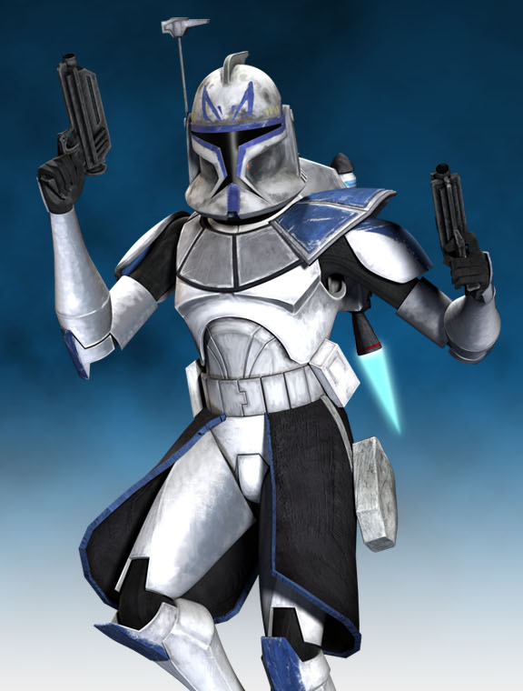

Soldado Rex
Rex, cuya designación era CT-7567 fue un veterano capitán clon que dirigió la aclamada Legión 501 del Gran Ejército de la República durante las Guerras Clon. Rex sirvió más adelante como capitán y comandante en la Alianza para Restaurar la República durante la Guerra Civil Galáctica. Criado y entrenado en Kamino, CT-7567 entró al servicio de la República Galáctica en la Batalla de Geonosis, en el 22 ABY. 7567 se forjó la reputación de un honorable comandante ante Jedi y soldados clon por igual, llegando a ser conocido como uno de los mejores y más duros soldados del Gran Ejército de la República. Con el tiempo, tomó el apodo de "Rex". Como capitán de la 501, Rex sirvió como segundo al mando del General Jedi Anakin Skywalker, cuya valentía y heterodoxia en batalla llegó a compartir. Rex fue muy amigo del Comandante Clon Mariscal Cody, cuya relación era un reflejo de la de sus respectivos Generales Jedi, Skywalker y Obi-Wan Kenobi. Los cuatro a menudo recibieron misiones conjuntas para coordinar sus campañas en primera línea contra la Confederación de Sistemas Independientes.
En la Batalla de Christophsis, Rex se convirtió en un mentor para la recién asignada Padawan de Skywalker, Ahsoka Tano, con quien forjó un fuerte vínculo. También logró sobrevivir a la Batalla de Teth, una batalla que nunca olvidaría debido a la erradicación casi total de su unidad, la Compañía Torrente. Más tarde inspeccionó con Cody un puesto de escucha de la República, donde Rex reunió a un pequeño grupo de soldados novatos para volver a tomar la Estación Rishi, y así frustrar los planes de invasión de Kamino del General Grievous. Rex pronto se retiró a la nave insignia de Skywalker, El Resuelto, y se unió a Skywalker y Tano en la realización de las ofensivas de la 501 en Bothawui, Felucia y otros focos de tensión en toda la galaxia. Participó en innumerables campañas de la guerra, como la contención del Virus Sombra Azul en Naboo y la liberación de Ryloth, así como otras victorias duramente alcanzadas como la Batalla de Malastare, la Segunda Batalla de Geonosis, y la Batalla de Kamino.

Volver a pagina principal